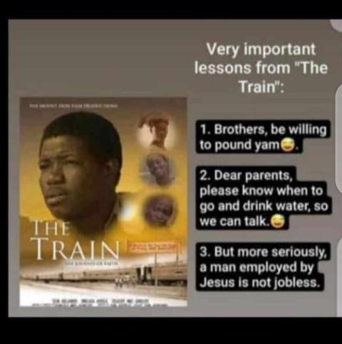

The Redeemed Christian Fellowship Ekiti State University started in 1988. At that time only a few believers started the entire fellowship. They came together at the famous LT Arts to hold prayer meetings and bible study. From there the fellowship began to grow numerically, structure-wise, and also importantly, spiritually.
Get inspired and motivated with
our up to date articles
gotten from students
and other credibles sources
